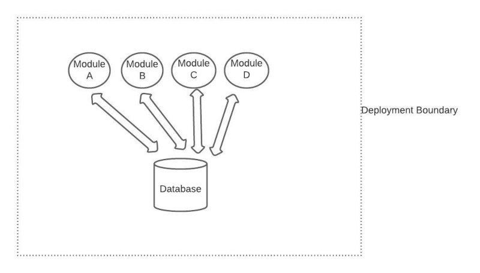
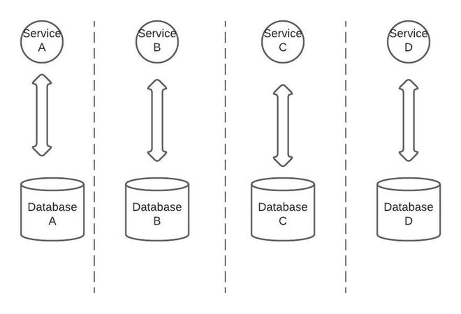
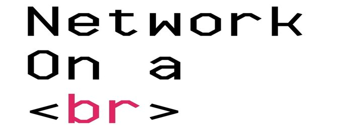
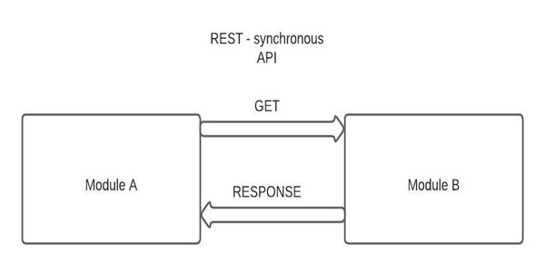
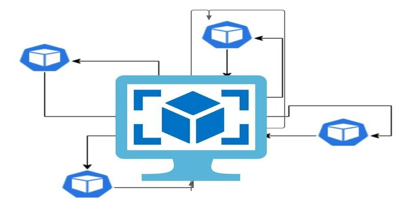
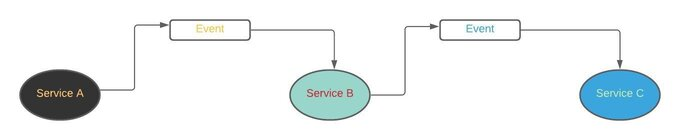
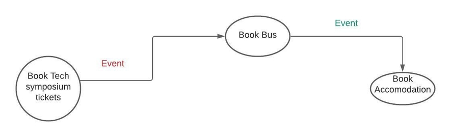
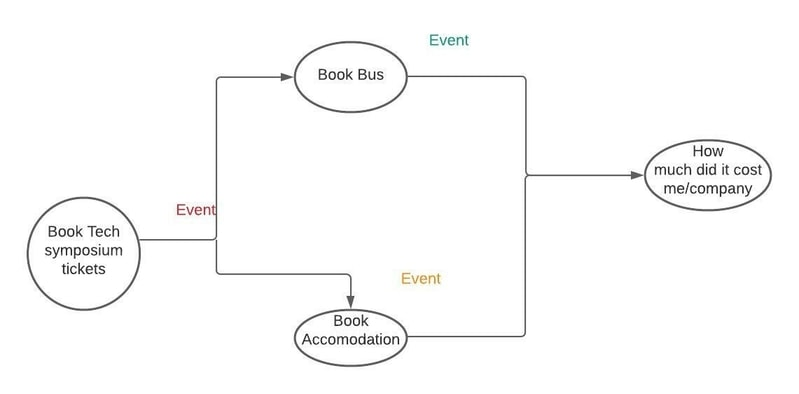

Azure Durable Functions- What are these and why we need them 10th June 2021

Stateful Workflows on top of Stateless Serverless Cloud Functions — this is the essence of the Azure Durable Functions library.This is the one line definition of Azure durable functions.But then this is lot of fancy words in one sentence, and they might be hard for the majority of readers to understand.Let's see a little background of web applications and then we will see where Azure Durable functions fit in
Monolith and Microservices
Originally, server-side applications were built in a style which is now referred to as Monolith. A monolithic application is built as a single unit.Enterprise Applications are built in three parts: a database (mostly relational database), a client-side user interface (HTML,Javascript on browser), and a server-side application(Eg C#,Java etc). This server-side application will handle HTTP requests, execute some business domain logic, retrieve/update data from/to database, and finally populate the HTML views to be sent back to the client's browser(Chrome,Firefox,IE etc). It is a monolith – a single logical executable. To make any alterations to the system, a developer must build and deploy an updated version of the server-side application.If multiple people and teams were developing parts of the same application, they mostly contributed to the same code base.
If the teams follow coding and design practises well, code base
would be structured well and it would have some distinct modules
or components, and a single team would typically own each
module.Normally, the modules would be packaged together at build
time and then deployed as a single unit, so a lot of interaction
between modules would stay inside the OS process. Although the
modules could stay loosely coupled, over a period of time, since
all teams would use a single centralized database, the coupling
almost always occurs on the level of the data store . This model
works great for small- to medium-size applications, but as the
team number swells,it turns out that teams start getting in each
other’s way as synchronization of contributions takes more and
more effort.
Monolith approach Eg in diagram below

As an alternative, and as industry evolved, there was this new
approach which came up with a revised service-oriented strategy
commonly called Microservices. In this approach,teams split
the big application into “vertical slices” structured around the
distinct business capabilities.Microservice capabilities are
expressed formally with business-oriented APIs.Each microservice
encapsulate a core business capability and the same service can be
reused in more than one business processes(and thats the beauty if
microservices) or over different business sceanrios, depending on
the requirement. By ensuring that principles of loose coupling are
followed and implemented, dependencies between services and their
consumer are kept to minimal.Services talk to each other via
documented and versioned public contracts.If microservices’
interfaces are exposed with a standard protocol, such as a
REST-ful API, they can be consumed and reused by other services
and applications without direct coupling through language bindings
or shared libraries. If the borders for the split were selected
well—and that’s the most tricky part—the contracts are standarized
and stay stable over time, and thin enough to avoid too much
chattiness then team can change the implementation of the
service,and consumers wont be affected by changes .This gives each
team enough autonomy to innovate at their best pace and to make
independent technical decisions.
In microservices approach,each team then owns a whole
vertical—from communication contracts, or even UIs, down to the
data storage. Explicitly shared databases are not recommended at
all.There are few drawbacks of microservices as well.

The tradeoff of this flexibility is complexity. Managing a
multitude of distributed services at scale is difficult for the
following reasons:
1).
Teams need to easily discover services as potential resuse candidates.We all know resuing services is easier than building from scratch, but for that to happen these services should be well documented etc.
2).
Interdependencies between services need to be closely monitored.If not architectured well, an application based on microservices might end up being a distributed monolith. In such scenario, microservices are chatty, sometimes calling each other and defeating the main purpose.Changes to one microservice required changes to others(becomes highly coupled).
3).
Services interact with each other through networks. Networks are
fundamentally unreliable.They work fine most of the times,but when
they fail it fails in all kinds of unpredictable manner.Yeah
network sometime takes break 😊

Imagine a scenario when one service goes unhealthy and is down.It
can go offline for multiple reasons, for instance say a new
version of service is being deployed,or may be there are plenty of
requests coming in and it cant handle the request load etc.The
problem is that all the requests to this failed/down service start
failing.The dependent service waits for the response and thus
blocks incoming requests of its own.You can probably guess where
it is heading.The error cascades upstream and there are failures
all over the place.The application is down. Your manager ofcourse
is not happy. Lets quickly look at above scenario through a
diagram

Issues with this approach even though your application will
work properly:
1).
Module A makes a request to Module B and waits for the response
2).
Module B may be down, offline or simply slow.
3).
Network delays may further decrease performance.If data is humongous, then it means there will be more REST calls
4).
Module B will be under heavy load,and can respond very late
Above scenario,where your system becomes less efficient because you have a synchronous API, is a perfect use case where you can apply event-driven solution
Event-Driven Microservice

In an event-driven microservice architecture, services communicate each-other via event messages. When a service performs some piece of work that other services might be interested in, that service produces an event. Other services consume them through event listeners and perform any of their own tasks.
The service that produces events,i.e publisher in this case, might not know about the consumers. Also, added advantage of this approach is that new event subscribers can be added over time.Lets consider a simple egample. Suppose you go to your favorite ecommerce website, and make an order.This single order placed event is produced and then will be consumed by several listening microservices:
1).
"Order" service may write an order to the database2).
"Customer" service could create the customer record3).
"Inventory" service may update the inventory available in the warehouse
Events can be published in variety of ways.For example, they can
be published to a queue which in turn takes care of the deliver of
the event to the right consumer, or they can be published to a
“pub/sub” model stream that in turn publishes the event and all
interested parties access them. Whatever be the case, the producer
publishes the event, and the consumer receives that event.Few
advantages of event driven architecture are listed below:
1).
Asynchronous - Ensures that one service doesn't block other.This allows resources to move freely to the next task once their execution is complete, without worrying about what happened before or will happen next. If one service is down, other services don’t catch fire immediately. The upstream services keep publishing the events, which add to the queue but can be stored safely for hours or days. The downstream services can stay healthy too. Since events are queued/buffered,it helps in reducing request overload.With a queue in place,lost work can be recovered by "replaying" events from the past2).
"Loose Coupling" is another biggest advantage.Services should not have any knowledge of other services,also also should not dependent on other services.With events,services are supposed to operate independently.Services under an event model can be updated,tested and deployed independently and therefore more easily3).
"Performance improvement" is another plus. Since services are less coupled & are supposed to perform only one task,tracking down bottlenecks to a specific service is relatively easy.Once the service in question is identified, we can scale that particular service.
Like any other architecture, its not all hunky-dory with this architecture too. There are drawbacks:
1).
One issue that comes hand-in-hand with loose coupling is low cohesion.Given many components that publish and subscribe to a large number of event types, it’s easy to stop seeing the forest for the trees. i.e you may not understand the high-level flow and therefore becomes tougher to contol the system behaviour as the app grows. The very advantage(loose coupling/flexibility) becomes disadvantage as the complexity increases when there are more microservices.The reason is that one event triggers a range of services, and with more events it becomes pretty unpredictable.An event driven architecture is easy to develop but hard to control.2).
Other significant drawback and challenge is data and transaction management. Since they are of asynchronous nature,there is a possibility of inconsistent data between services,duplicate events etc which means there is no support for ACID transactions.Instead,there is support for eventual consistency which can be more difficult to track or debug.Cloud and Serverless

Image from
favpng
Rise of cloud changed the way we designed applications. Public
cloud is the paramount distributed system and no doubt these
systems are hard.Having said that lot many things became easier
with cloud.
Benefits include:
1).
Provisioning of new resources now just take minutes (which earlier would have taken months)2).
There is more flexibility which means more control over capacity and leads to scalabilty3).
Reduced IT costs4).
Resiliency and disaster recovery at the global scaleThere are various reasons to deploy applications to multiple geographic locations. First thing being, with customers needing faster websites/applications like never before, if you stay closer to the customer,there is reduced network latency which therefore helps the cause.And you can also achieve resilience through geographical redundancy.There are 2 keywords to understand in the above sentence. One being resilience which refers to the ability to continue operating when there has been an failure,irrespective of what kind and redundancy means the level of backup that can take over when the primary equipment or infrastructure fails.
And there is more to think about.Each cloud provider has tons of managed services, which has its own prons and cons. Prons being that specialized services are best to provide off-the-shelf solutions to common complex problems.Btw, Off-the-shelf here means that we have standard solutions to problems which others might have faced.On the flip side,each service has distinct properties w.r.t resiliency, fault tolerance and consistency.
ServerlessWhen I first heard the word serverless few years back, I was confused and not sure what exactly it meant.So dont be perplexed if you are not sure either.Just hang on and you should get it by end of the article .Serverless is a way to describe the services, practices, and strategies that enable you to build more agile applications.It's a term that is used to descirbe cloud services that do not require provisioning of VMs, instances, etc. All you need to worry about is writing code that serves your customers.Resources are allocated dynamically and transparently, and the cost is based on their actual consumption, rather than on pre-purchased capacity.
Also donot think that serverless means servers donot exist. They do exist but its been taken care by someone else.You don't manage the uptime of serverless applications:your cloud provider does.
Best thing about this is that you pay for what you use.This is beneficial in most scenarios for eveyrone and even more for startups because they dont want to invest in hardware upfront.It is more like pay as you go.Also, you abstract away the hardware,scalibility part etc to the cloud provider.Somewhat like what you do with gas to heat up your house. You dont setup a powerplant but instead you buy gas from your energy provider and pay as per their billing cycle.
Serverless compute does the same: it supplies standard services on a pay-per-use basis. Often, serverless computing is also referred to as Function-as-a-Service (FaaS). For instance, Azure offers Azure functions,and what it allows us to do is run small pieces of code in the cloud.It enables us to run event-triggered code without having to provision or manage infrastructure.So all we need to focus is on the pieces of code that matters and Fuctions handle the rest.Azure Functions scale based on demand and you pay only for the resources you consume.So.. No usage—no bill.Isn't that fantastic?
And then there is always some "But". FaaS services come with some terms and conditions that applications have to follow:
- Quick runs: Functions can only run up to several minutes, and its advised for a few seconds or less;
- Event-Driven: For each serverless function you have to define a specific trigger i.e functions can only be triggered by an event which can occur in virtually any Azure or 3rd party service as well as on-premises systems.Being as a trigger-based service, it runs a script or piece of code in response to a variety of events.
- Stateless: Since infrastructure is taken care by the cloud provider, you can't control where and when function instances are provisioned or deprovisioned, and hence there is no way to store data unless ofcourse you use external storage.You may wonder why do you need to maintain state afterall, so lets discuss that below with an egample
Challenges of Serverless model
Let's consider a hypothetical scenario where in our Web Application will book tickets to tech symposium.Assume tech symposium is in another city and you can get there by bus.Also since you might have to say there overnight,you need to book an accomodation. Therefore, our web application will take care of booking tech symposium tickets,reserving seat on the bus and booking hotel accomodation itself

In above sceanario, you can clearly see that there are 3 major steps.
1).
Book tech symposium tickets2).
Reserve a seat on the bus3).
Book a hotelEach step above,can have it's own Azure function.A standard function is best thought of as a software switch- takes data from one input,processes it and then takes appropriate action. It can also emits an event which the next function can listen for.Now all of that looks good under normal conditions.But then there are few questions which arises and we need to answer/handle
What about sequencing- Is above really decoupled?

In above eg, we had 3 steps which executed in sequence. Each task is independent of each other and can run on its own.But even then, as you can see in above picture, the function's sequence is kind of predefined and that leads to coupling.If, for instance, we swap the order of reserving seat on bus with booking accomodation, that would require a code change—at least of the input/output wiring definitions.
Can we run these functions parallely?
This is where we left above. We know that all these tasks are
independent of each other.But renociliation of outputs of each
task is the challenge.Like for instance, say your manager wants to
know how much did the whole trip cost to the company.
Like in above picture, both Book Bus and
Book accomodation are listening to the same event.Once
they receive that event,they get on with their individual tasks
and complete it. But like mentioned above, there is no way to
implement "how much did it cost the company" as a single azure
function because functions can't be triggered by two events.So we
might have to use a shared storage.Complexity grows
multifold if there are more tasks running in parallel
What if some third party service falls over-Error handling
Now above we did mention that our application reserves a seat on
bus. Now assume the reserving seat on a bus system is down(some
third party application).To make things complex we dont have a
control over the third party app and therefore dont know when it
will be back. In normal scenario, retries may happen almost
immediately but that may not be ideal in this situation.What we
need is probably an exponential back-off policy.Exponential
backoff is a standard error-handling strategy for network
applications. In this approach, a client periodically retries a
failed request with increasing delays between requests.
But to implement that next attempt need to know history of
attempts and again we need to persist that somewhere.In the above
hypothetcial web application egample, if the workflow is made
little more complex, there may be a scenario that if for some
reason reserving a seat on bus fails,then application need to book
a cab.So what it means is that when there is an error, we might
have to run some compensating logic.
All the above scenarios, either that be error handling or parallel actions, needs some storage/shared space.Unfortunately,Azure functions are stateless and therefore are not aware of bigger picture, while workflows like these require a state to keep track of their progress. Therefore they are not aware of bigger picture. Now with all these points in mind, we know where we are heading to.We need someone to take care of the state and that is where Microsoft Azure Durable Functions came into play.In fact, this is an extension that allows you to write stateful functions that manage state, errors, restarts etc. Durable functions allows us to organise low-level single-purpose independent functions into high-level workflows.Since Durable functions offer a way to orchestrate other functions, they can help to create workflows in which status is saved automatically using storage. Oh, and they have a history too!
Conclusion.
To conclude,I hope you understand what are API's, it's usage and
types of API.Do refer my blog to understand API-schema. Link
belowLink below
What is API-Schema
And that's it. Hope you undertood how to customize JSON server. .Email me at "techspacedeck@gmail.com" incase you have queries. Alternatively, you can fill the "CONTACT" form or drop a comment below